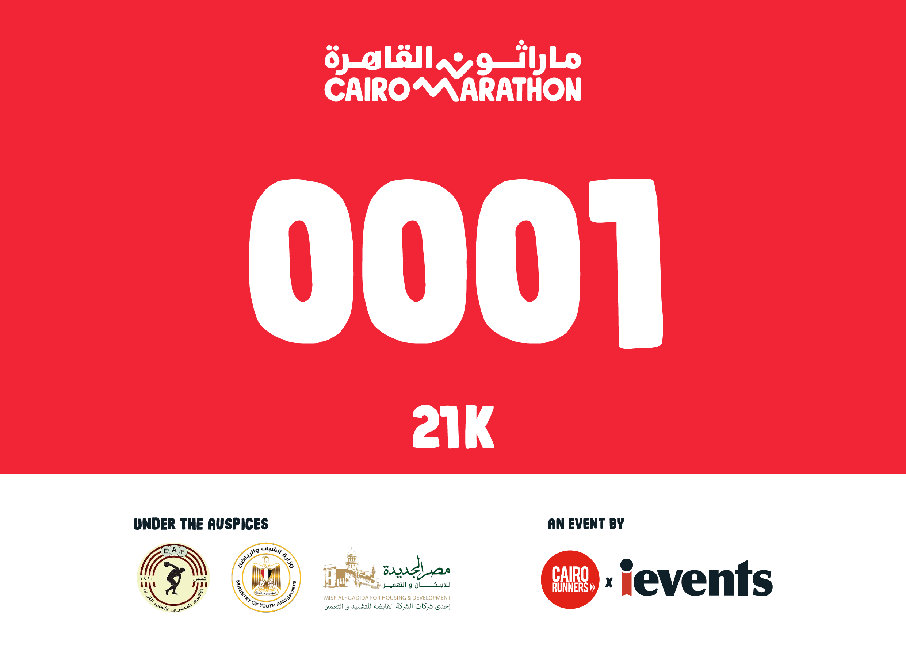

Cairo Marathon is an annual marathon held in the streets of Cairo, a historic place with so much value. This marathon is all about unity, all types of people uniting from different parts of Egypt and the world. Running through the streets of Cairo, you pass through a unique route that features some of Cairo’s iconic
Cairo Marathon is considered one of the biggest sports events happening in the country each year with more than 7,000 participants. After months of training and running the streets of Egypt, this event brings
We have a wide variety of routes for everyone, there’s a 21K Race, a 10K Race, and a 1.5K Family Run to make sure that everyone enjoys a day full of sports, fun, and food. Don’t forget to stick around after the race, there’s an AFTER PARTY! So keep warming up, and get ready for those 21Ks!

Marathons are a place where people unite and this year we’re all uniting for a cause, depression. Behind this extravagant event is a huge cause we want to spread awareness about. Depression and mental health in Egypt are overlooked and we want to help end the stigma around mental health. Depression is a very strong word that we want to talk about more seriously and take action towards. People belittle the word depression all the time, when in fact it’s a serious disease like any other disease and it can’t be taken lightly. We want to raise awareness to the people about depression and what it is and how serious it can be.

The Hub is a pre-marathon 5 day expo where you’ll find all things marathon, from fun activities to get you excited, to motivational talks to inspire you, to mental health seminars to help you, and much much more. Come pick up your registration kit and find out what’s happening at the Hub! Registration kits will be picked up in person and pick-up will be located at the Hub (more info here). To pick up your registration kit, runners must have their QR code on hand, These items (registration packets, bags and running shirts) will not be available for pickup on race day, and will not be sent out. Individuals will not be allowed to pick up these items on behalf of others.
BIB
T-Shirt
PARTICIPANT BAG